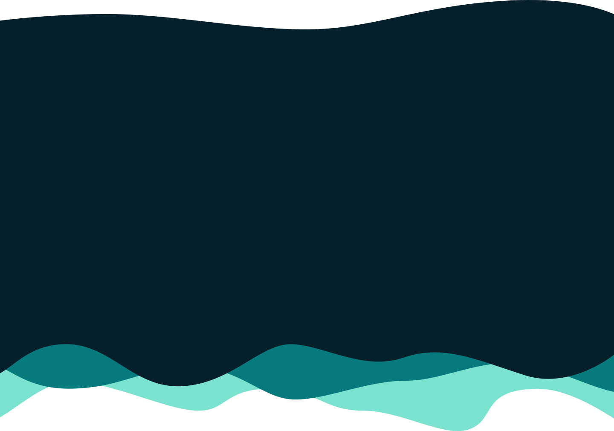
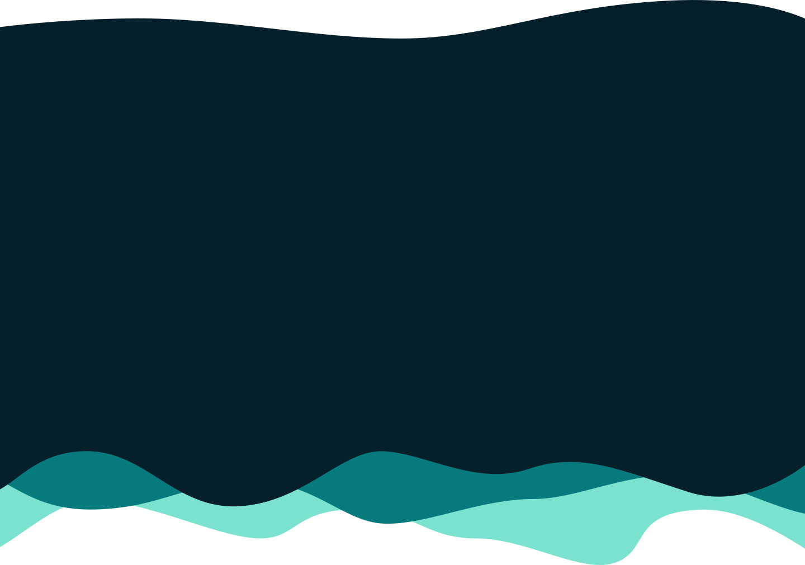

Wie ben ik?
20 jarige student aan de Hogeschool van Amsterdam bij Communicatie en Multimedia Design. Ik ben een ontwerper met een brede interesse in visuele communicatie, games en data. Tijdens mijn studie en stages heb ik gewerkt aan uiteenlopende projecten.
Ik ben ondertussen ook al 4 jaar een gepassioneerde Minecraft skin designer. In mijn vrije tijd ben ik graag actief bezig.
Projecten
CMDer
Portfolio Emogy
Tijdens mijn stage bij Emogy heb ik de portfolio-pagina’s herontworpen. Ik was
verantwoordelijk voor alle fases van het ontwerptraject: van onderzoek en
conceptontwikkeling tot het uitwerken in code. Ik heb zowel de overzichtspagina als de
verdiepingspagina’s gerealiseerd, met oog voor gebruiksvriendelijkheid en visuele
samenhang.
Bekijk de pagina op emogy.nl
Budowazasport
De website van mijn jiu jitsu vereniging was erg verouderd en werd niet actief bijgehouden.
In begin 2024 heb ik het initiatief genomen om de website vanaf nul te bouwen. Deze heb ik sindsdien
actief bijgehouden zodat iedereen de website als informatie bron kan gebruiken voor actuele zaken.
Bekijk de pagina op budowazasport.nl
Projecten
Game Designer
Level
Tijdens mijn minor Applied Game Design heb ik het spel Level gemaakt. In dit spel
moet je een portaal bereiken doormiddel van parkour en het draaien van de wereld.
Tijdens dit project ging je door elke fase van ontwerpen: van het bedenken, het
bouwen in Unity tot de vormgeving.
Speel het spel op itch.io
Weight of Honour
Tijdens mijn minor Applied Game Design heb ik samen met een groep het spel Weight of
Honour gemaakt. Het doel is om uit een kasteel te ontsnappen, maar je moet ook je
gewonde maat meenemen. Tijdens dit project was ik de asset curator, maar ik ben ook
veel betrokken geweest in het ontwerpen van het spel.
Speel het spel op itch.io
Project
Information Design

Analyse Kledingkleur
Voor het vak Datavisualisatie tijdens de minor Information Design heb ik een onderzoek uitgevoerd naar kledingkleuren in de openbare ruimte. Ik analyseerde welke kleuren het meest gedragen worden en bracht dit visueel in kaart met een eigen ontworpen datavisualisatie. In dit project combineerde ik data-analyse en visueel ontwerp om een informatief eindresultaat te creëren.
Contact
Neem contact met mij op